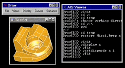

All demo scripts are provided with OCCT sources and locate in CASROOT/samples/tcl. To play around them please follow the steps below:
- Start DRAWEXE
- Type cd ../.. to return to the root directory
- Type cd samples/tcl to reach the DrawResources directory
- Type source <demo_file> to run the demonstration file provided with Open CASCADE. The following demonstration files are available:
- DataExchangeDemo.tcl: demonstrates sample sequence of operations with writing and reading IGES file
- ModelingDemo.tcl: demonstrates creation of simple shape and displaying it in HLR mode
- VisualizationDemo.tcl: demonstrates use of 3d viewer
- cad.tcl: creates solid shape looking like abbreviation "CAD"
- bottle.tcl: creates bottle as in OCCT Tutorial
- drill.tcl: creates twist drill bit shape
- cutter.tcl: creates milling cutter shape
- xde.tcl: demonstrates creation of simple assembly in XDE
- materials.tcl: demonstrates visual properties of materials supported by 3d viewer
- raytrace.tcl: demonstrates use of ray tracing display in 3d viewer
- dimensions.tcl: demonstrates use of dimensions, clipping, and capping in 3d viewer
- ...
Draw is a command interpreter based on TCL and a graphical system used for testing and demonstrating OCCT modeling libraries.
Draw can be used interactively to create, display and modify objects such as curves, surfaces and topological shapes.

Scripts can be written to customize Draw and perform tests. New types of objects and new commands can be added using C++ programming language.
Draw contains:
- A command interpreter based on TCL command language.
- A 2D an 3D graphic viewer with support of operations such as zoom, pan, rotation and full-screen views.
- An optional set of geometric commands to create and modify curves and surfaces and to use OCCT geometry algorithms.
- A set of topological commands to create and modify BRep shapes and to use OCCT topology algorithms.
- A set of graphic commands for view and display operations including Mesh Visualization Service.
- A set of Application framework commands for handling of files and attributes.
- A set of Data Exchange commands for translation of files from various formats (IGES,STEP) into OCCT shapes.
- A set of Shape Healing commands: check of overlapping edges, approximation of a shape to BSpline, etc.
You can add new custom test harness commands to Draw in order to test or demonstrate a new functionality, which you are developing.
Currently DRAW Test Harness is a single executable called DRAWEXE.
Commands grouped in toolkits can be loaded at run-time thereby implementing dynamically loaded plug-ins. Thus you can work only with the commands that suit your needs adding the commands dynamically without leaving the Test Harness session.
Declaration of available plug-ins is done through special resource file(s). The pload command loads the plug-in in accordance with the specified resource file and activates the commands implemented in the plug-in.
The whole process of using the plug-in mechanism as well as the instructions for extending Test Harness is described in the Draw Test Harness.
Draw Test Harness provides an environment for OCCT automated testing system. Check its Automated Testing System for details.
Remarks:
- The DRAWEXE executable is delivered with the installation procedure on Windows platform only.
- To start it, launch DRAWEXE executable from Open CASCADE Technology/Draw Test Harness item of the Start\Programs menu.
Experimenting with Draw Test Harness
On Linux:
- If OCCT was built by Code::Blocks use $CASROOT/draw.sh file to launch DRAWEXE executable.
Draw[1]> prompt appears in the command window
Type pload ALL
On Windows:
Launch Draw executable from Open CASCADE Technology\Test Harness\Draw Test Harness item of the Start\Programs menu or Use $CASROOT\draw.bat file to launch DRAWEXE executable.
Draw[1]> prompt appears in the command window
Type pload ALL
Creating your first geometric objects
- In the command window, type axo to create an axonometric view
- Type box b -10 -10 -10 20 20 20 to create a cube b of size 20, parallel to the X Y Z axis and centered on the origin. The cube will be displayed in the axonometric view in wireframe mode.
- Type fit to fill the viewer with the cube
- Type pcylinder c 2 30 to create a cylinder c of radius 2 and height 30. The cylinder will be displayed in addition to the cube
Manipulating the view
- Type clear to erase the view
- Type donly c to display the cylinder only
- Type donly b to display the cube only
- Type hlr hlr b to display the cube in the hidden line removal mode
Running demonstration files
- Type cd ../.. to return to the root directory
- Type cd samples/tcl to reach the DrawResources directory
- Type source <demo_file> to run the demonstration file provided with Open CASCADE. The following demonstration files are available:
- DataExchangeDemo.tcl: demonstrates sample sequence of operations with writing and reading IGES file
- ModelingDemo.tcl: demonstrates creation of simple shape and displaying it in HLR mode
- VisualizationDemo.tcl: demonstrates use of 3d viewer
- cad.tcl: creates solid shape looking like abbreviation "CAD"
- bottle.tcl: creates bottle as in OCCT Tutorial
- drill.tcl: creates twist drill bit shape
- cutter.tcl: creates milling cutter shape
- xde.tcl: demonstrates creation of simple assembly in XDE
- materials.tcl: demonstrates visual properties of materials supported by 3d viewer
- raytrace.tcl: demonstrates use of ray tracing display in 3d viewer
- dimensions.tcl: demonstrates use of dimensions, clipping, and capping in 3d viewer
Getting Help
- Type help to see all available commands
- Type help <command_name> to find out the arguments for a given command
 1.8.13
1.8.13